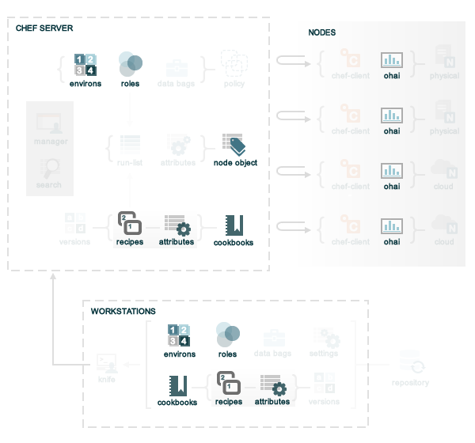

An attribute is a specific detail about a node. Attributes are used by Chef to understand:
Attributes are defined by:
During every Chef run, the chef-client builds the attribute list using:
After the node object is rebuilt, all of attributes are compared, and then the node is updated based on attribute precedence. At the end of every Chef run, the node object that defines the current state of the node is uploaded to the Chef Server so that it can be indexed for search.
Chef uses six types of attributes to determine the value that is applied to a node during the Chef run. In addition, Chef sources attribute values from up to five locations. The combination of attribute types and sources allows for up to 15 different competing values to be available to Chef during the Chef run.
So how does Chef determine which value should be applied? Keep reading to learn more about how attributes work with Chef, including more about the types of attributes, where attributes are saved, and how Chef chooses which attribute to apply.
Attribute types can be any of the following:
| Attribute Type | Description |
|---|---|
| default | A default attribute is automatically reset at the start of every Chef run and has the lowest attribute precedence. A cookbook should be authored to use default attributes as often as possible. |
| force_default | A force_default attribute is used to ensure that an attribute defined in a cookbook (by an attribute file or by a recipe) takes precedence over a default attribute set by a role or an environment. |
| normal | A normal attribute is a setting that persists on the target system and is never reset during a Chef run. A normal attribute has a higher attribute precedence than a default attribute. |
| override | An override attribute is automatically reset at the start of every Chef run and has a higher attribute precedence than default, force_default, and normal attributes. An override attribute is most often specified in a recipe, but can be specified in an attribute file, for a role, and/or for an environment. A cookbook should be authored so that it uses override attributes only when required. |
| force_override | A force_override attribute is used to ensure that an attribute defined in a cookbook (by an attribute file or by a recipe) takes precedence over an override attribute set by a role or an environment. |
| automatic | An automatic attribute contains data that is identified by Ohai at the beginning of every Chef run. An automatic attribute cannot be modified and always has the highest attribute precedence. |
At the beginning of a Chef run, all default, override, and automatic attributes are reset. Chef rebuilds them using data collected by Ohai at the beginning of the Chef run and by attributes that are defined in cookbooks, roles, and environments. Normal attributes are never reset. All attributes are then merged and applied to the node according to attribute precedence. At the conclusion of the Chef run, all default, override, and automatic attributes disappear, leaving only a collection of normal attributes that will persist until the next Chef run.
Attributes are provided to Chef from the following locations:
If we go back to the overview of Chef, but then focus only on where attributes are located, it looks something like this:
where:
An automatic attribute is a specific detail about a node, such as an IP address, a host name, a list of loaded kernel modules, and so on. Automatic attributes are detected by Ohai and are then used by Chef to ensure that these attribute are handled properly during every Chef run. The most commonly accessed automatic attributes are:
| Attribute | Description |
|---|---|
| node['platform'] | The platform on which a node is running. This attribute helps determine which providers will be used. |
| node['platform_version'] | The version of the platform. This attribute helps determine which providers will be used. |
| node['ipaddress'] | The IP address for a node. If the node has a default route, this is the IPV4 address for the interface. If the node does not have a default route, the value for this attribute should be nil. The IP address for default route is the recommended default value. |
| node['macaddress'] | The MAC address for a node, determined by the same interface that detects the node['ipaddress']. |
| node['fqdn'] | The fully qualified domain name for a node. This is used as the name of a node unless otherwise set. |
| node['hostname'] | The host name for the node. |
| node['domain'] | The domain for the node. |
| node['recipes'] | A list of recipes associated with a node (and part of that node’s run-list). |
| node['roles'] | A list of roles associated with a node (and part of that node’s run-list). |
| node['ohai_time'] | The time at which Ohai was last run. This attribute is not commonly used in recipes, but it is saved to the Chef Server and can be accessed using the knife status sub-command. |
The list of automatic attributes that are collected by Ohai at the start of each Chef run vary from organization to organization, and will often vary between the various server types being configured and the platforms on which those servers are run. All attributes collected by Ohai are unmodifiable. To see which automatic attributes are collected by Ohai for a particular node, run the following command:
ohai$ grep -R "provides" -h lib/ohai/plugins|sed 's/^\s*//g'|sed "s/\\\"/\'/g"|sort|uniq|grep ^provides
An attribute file is located in the attributes/ sub-directory for a cookbook. When a cookbook is run against a node, the attributes contained in all attribute files are evaluated in the context of the node object. Node methods (when present) are used to set attribute values on a node. For example, the Apache cookbook contains an attribute file called default.rb, which contains the following attributes:
default["apache"]["dir"] = "/etc/apache2"
default["apache"]["listen_ports"] = [ "80","443" ]
The use of the node object (node.) is implicit in the previous example; the following example defines the node object itself as part of the attribute:
node.default["apache"]["dir"] = "/etc/apache2"
node.default["apache"]["listen_ports"] = [ "80","443" ]
A recipe is the most fundamental configuration element within the Chef environment. A recipe:
An attribute can be defined in a cookbook (or a recipe) and then used to override the default settings on a node. When a cookbook is loaded during a Chef run, these attributes are compared to the attributes that are already present on the node. When the cookbook attributes take precedence over the default attributes, Chef will apply those new settings and values during the Chef run on the node.
A role is a way to define certain patterns and processes that exist across nodes in a Chef organization as belonging to a single job function. Each role consists of zero (or more) attributes and a run list. Each node can have zero (or more) roles assigned to it. When a role is run against a node, the configuration details of that node are compared against the attributes of the role, and then the contents of that role’s run list are applied to the node’s configuration details. When a chef-client runs, it merges its own attributes and run lists with those contained within each assigned role.
An attribute can be defined in a role and then used to override the default settings on a node. When a role is applied during a Chef run, these attributes are compared to the attributes that are already present on the node. When the role attributes take precedence over the default attributes, Chef will apply those new settings and values during the Chef run on the node.
A role attribute can only be set to be a default attribute or an override attribute. A role attribute cannot be set to be a normal attribute. Use the default_attribute and override_attribute methods in the Ruby DSL file or the default_attributes and override_attributes hashes in a JSON data file.
An environment is a way to map an organization’s real-life workflow to what can be configured and managed when using Chef Server. Every Chef organization begins with a single environment called the _default environment, which cannot be modified (or deleted). Additional environments can be created, such as production, staging, testing, and development. Generally, an environment is also associated with one (or more) cookbook versions.
An attribute can be defined in an environment and then used to override the default settings on a node. When an environment is applied during a Chef run, these attributes are compared to the attributes that are already present on the node. When the environment attributes take precedence over the default attributes, Chef will apply those new settings and values during the Chef run on the node.
An environment attribute can only be set to be a default attribute or an override attribute. An environment attribute cannot be set to be a normal attribute. Use the default_attribute and override_attribute methods in the Ruby DSL file or the default_attributes and override_attributes hashes in a JSON data file.
Attributes are always applied to Chef in the following order:
where the last attribute in the list is the one that is applied to the node.
Note
The attribute precedence order for roles and environments is reversed for default and override attributes. The precedence order for default attributes is environment, then role. The precedence order for override attributes is role, then environment. Applying environment override attributes after role override attributes allows a role to exist in multiple environments.
Attribute precedence, viewed from the same perspective as the Chef overview diagram, where the numbers in the diagram match the order of attribute precedence:

Attribute precedence, when viewed as a table:

The following examples are listed from low to high precedence.
Default attribute in /attributes/default.rb
default["apache"]["dir"] = "/etc/apache2"
Default attribute in /environments/environment_name.rb
default_attributes({ "apache" => {"dir" => "/etc/apache2"}})
Default attribute in /roles/role_name.rb
default_attributes({ "apache" => {"dir" => "/etc/apache2"}})
Default attribute in node object in recipe
node.default["apache"]["dir"] = "/etc/apache2"
Normal attribute set as a cookbook attribute
set["apache"]["dir"] = "/etc/apache2"
normal["apache"]["dir"] = "/etc/apache2" #set is an alias of normal.
Normal attribute set in a recipe
node.set["apache"]["dir"] = "/etc/apache2"
node.normal["apache]["dir"] = "/etc/apache2" # Same as above
node["apache"]["dir"] = "/etc/apache2" # Same as above
Override attribute in /attributes/default.rb
override["apache"]["dir"] = "/etc/apache2"
Override attribute in /roles/role_name.rb
override_attributes({ "apache" => {"dir" => "/etc/apache2"}})
Override attribute in /environments/environment_name.rb
override_attributes({ "apache" => {"dir" => "/etc/apache2"}})
Override attribute in a node object (from a recipe)
node.override["apache"]["dir"] = "/etc/apache2"
Ensure that a default attribute has precedence over other attributes
When a default attribute is set like this:
default["attribute"] = "value"
any value set by a role or an environment will replace it. To prevent this value from being replaced, use the force_default attribute precedence:
force_default["attribute"] = "I will crush you, role or environment attribute"
or:
default!["attribute"] = "The '!' means I win!"
Ensure that an override attribute has precedence over other attributes
When an override attribute is set like this:
override["attribute"] = "value"
any value set by a role or an environment will replace it. To prevent this value from being replaced, use the force_override attribute precedence:
force_override["attribute"] = "I will crush you, role or environment attribute"
or:
override!["attribute"] = "The '!' means I win!"